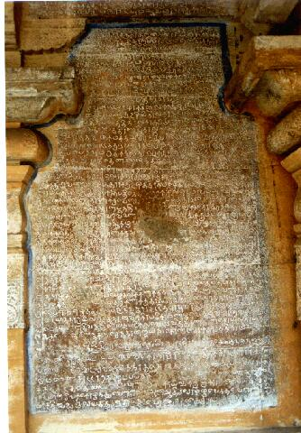

veṇkāṭu
- Identifier: KV11
- Modern Name (NIC):
- Modern Name (M.I.): tiruveṇkāṭu
- Modern Name (Govt Press): tiruvēṅkāṭu
- Modern Name: Tiruveṇkāṭu
- Modern District & Taluk: nākappaṭṭiṉam DT (cīrkāḻi TK)
- Old administrative location: Tanjore DT (Shiyally TK)
- Nearby town: Cīkāḻi
- Railway station: Cīkāḻi (SE. 11km)
- Longit. 79 deg. 49'; Latit. 11 deg. 10' [KV11]
- C.D.Maclean-3: entry: SHIYALLY, p. 827, col. 2,
[Trivengaud [tiruveṇkāṭu], village, place of pilgrimage,
skt. śvētāranya, pop. 2639,
lat. 11 deg. 11', long. 79 deg. 51']
- Location: according to PK: Cōḻa Nāṭu, Kāvēri Vaṭa Karai (KV11)
- Name inside hymns:
- Name inside PK: veṇkāṭu
- Rank inside third volume of PIFI: 265
- Rank inside Civastala Mañcari: 263
- Rank on PY576 map: 110
- Total number of patikam-s: 6
- Campantar: 3 patikam
- Appar: 2 patikam
- Cuntarar: 1 patikam
5 pictures taken on 1997 August 10th (Sunday morning)



- Patikam 2_48
- Patikam 2_61
- Patikam 3_15
- Patikam 5_49
- Patikam 6_35
- Patikam 7_6